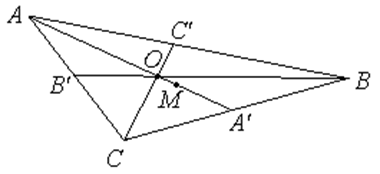

П 4.1 №5
Докажите, что точка пересечения медиан треугольника делит каждую
медиану в отношении считая от вершины.
РЕШЕНИЕ:
Пусть  – середина
стороны
– середина
стороны  , –
середина стороны
, –
середина стороны  . Отложим на медиане расстояние от
вершины и поставим точку
. Отложим на медиане расстояние от
вершины и поставим точку  . Тогда
. Тогда
– середина
стороны , –
середина стороны . Отложим на медиане расстояние от
вершины и поставим точку . Тогда.
Отложим от вершины  по медиане
по медиане  расстояние и
поставим точку
расстояние и
поставим точку  . Найдем координаты вектора
в базисе векторов
. Найдем координаты вектора
в базисе векторов  и
и  .
.
по медиане расстояние и
поставим точку . Найдем координаты вектора
в базисе векторов и .
Но это координаты вектора .
Таким образом, точка и точка совпадают, это – точка пересечения
медиан, и она делит медианы и в отношении считая
от вершины.
и точка совпадают, это – точка пересечения
медиан, и она делит медианы и в отношении считая
от вершины.